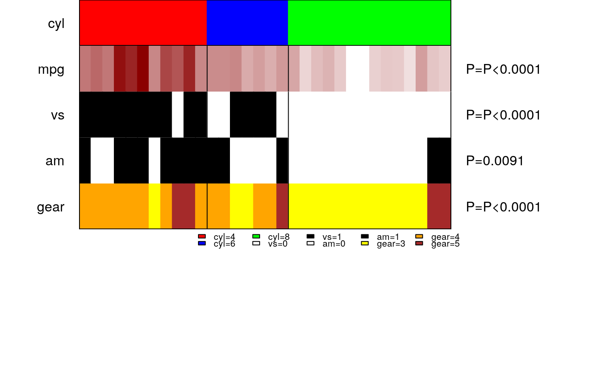
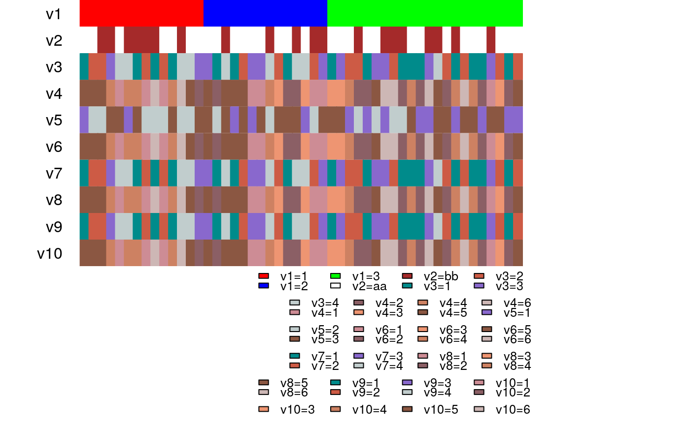

panelmap with one line commandmakepanel.RdA wrapper function to plot panelmap with one line command, which internally calls panelet_category, panelet_group, and panelet_continuous. One can pass all parameters in one go. For panelet level customization, use without wrapper function
makepanel(soln, soln.name,soln.col,mat, mat.col,mat.type, legend=FALSE, get.pval=FALSE,NA.flag=FALSE, NA.col="grey", border=FALSE, border.col="black", lnrow=3, lncol=5,lcex=1, legend.vec=NULL, legend.col=NULL, lheight=1, ...)
| soln | required. vector. Class or group labels. see |
|---|---|
| soln.name | a string, name for your class or group labels |
| soln.col | a vector of colors specified for each class in |
| mat | data frame. of values that you want to plot. Make sure they are ordered in the same order as |
| mat.col | list. of color values to be coded. names of the list are column names of |
| mat.type | vector. type of data type in mat. |
| NA.flag | logical, default is |
| NA.col | default is "grey". see |
| get.pval | logical, default is |
| border | logical, default is |
| border.col | default is |
| legend | logical. default is |
| lnrow | numeric. Number of rows in each panelet of the legend. Adjust to fit in plot margins. Default is 3 rows. See |
| lncol | numeric. Number of columns on each panelet of the legend. Adjust accordingly for legibility. Default is 5 columns.Only when |
| lcex | numeric. Magnification of legend labels. Default value is |
| legend.vec | vector. When |
| legend.col | vector. When |
| lheight | numeric. If your legend overflows the current |
| ... | pass optional arguments here |
... can pass other parameters. Use it for controlling names and colors of panelets via cex, col. border line type and thickness can be controlled via lty and lwd respectively.
A colored panelemap of discrete/continuous values is plotted ordered according to the group labels as specified.
makepanel
#sort everything by cyl mtcars.sort = mtcars[order(mtcars$cyl),] #other features to plot mat = mtcars.sort[,c("mpg","vs","am","gear")] #color assigned to each feature mat.col=list(am=c("white","black"), vs=c("white","black"), gear=c("yellow","orange","brown"), mpg=c("white", "darkred")) #type of each feature. type=1 for discrete and type=2 for continuous. mat.type= c(2,1,1,1) tab=makepanel(soln=mtcars.sort$cyl, soln.name="cyl",soln.col=c("red","blue","green"), mat=mat, mat.col=mat.col, mat.type=mat.type, border=TRUE, legend=TRUE, get.pval=TRUE, cex=1)#>#>#>#>#example to adjust for legend parameters v1=v5= sample(c(1:3),50, replace=TRUE) v2 = sample(c("aa","bb"),50, replace=TRUE) v3 = v7 = v9 = sample(c(1:4), 50, replace=TRUE) v4 = v6 = v8 = v10 = sample(c(1:6), 50, replace=TRUE) mat = cbind(v2,v3,v4,v5,v6,v7,v8,v9,v10) mat.type = rep(1,9) col4 = c("cyan4", "coral3", "mediumpurple3", "azure3") col6 = c("lightpink3", "lightpink4", "lightsalmon2", "lightsalmon3","lightsalmon4", "mistyrose3") mat.col = list(v2 = c("white", "brown"), v3 = col4, v7 = col4, v9=col4, v4=col6, v6=col6, v8=col6, v10=col6,v5=c("mediumpurple3", "azure3", "lightsalmon4")) v1 = v1[order(v1)] makepanel(v1, "v1", c("red","blue","green"), mat, mat.col, mat.type, legend=TRUE, lnrow=2, lncol=4, lcex=1.2, lheight=4)